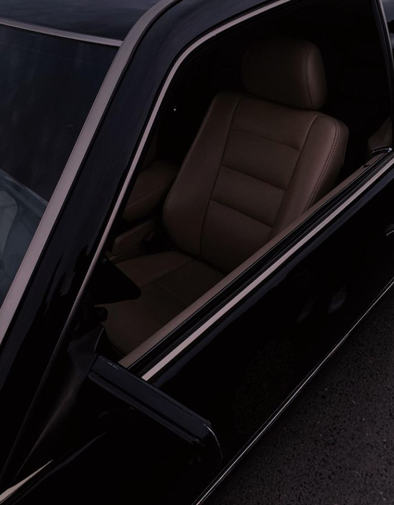
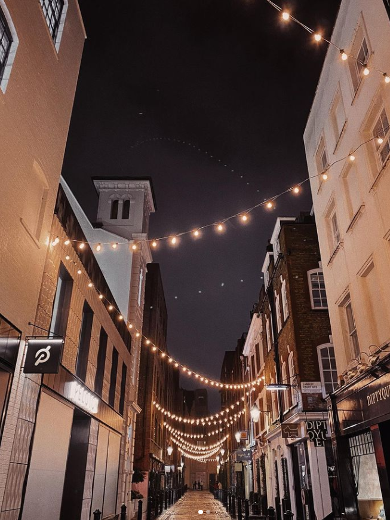
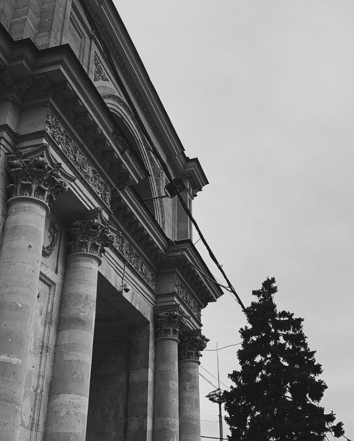
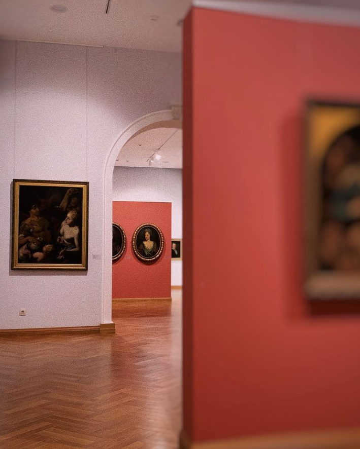
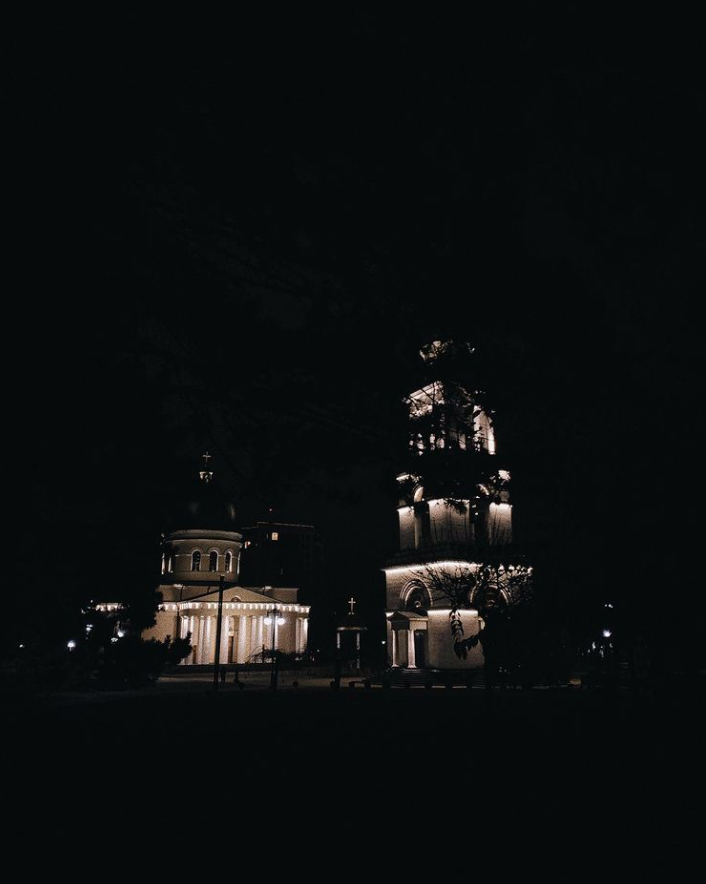
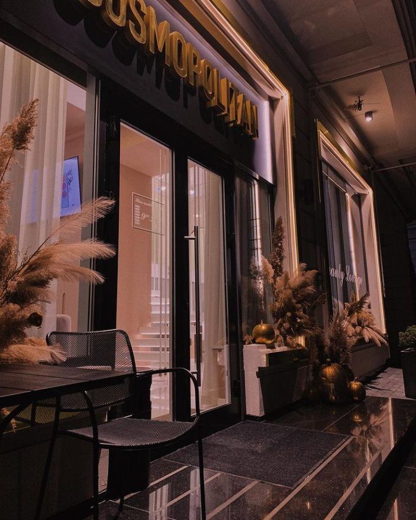
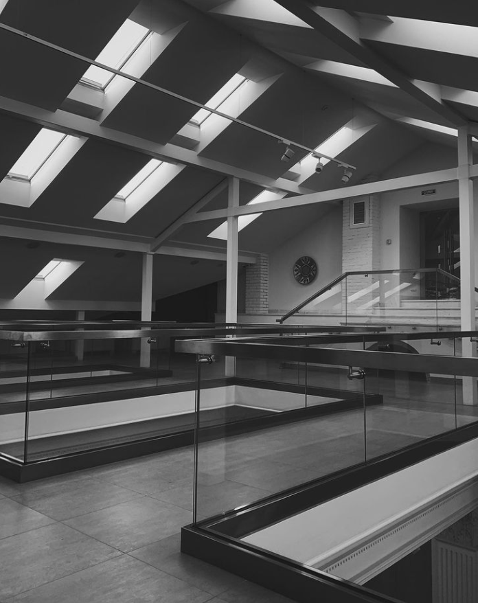
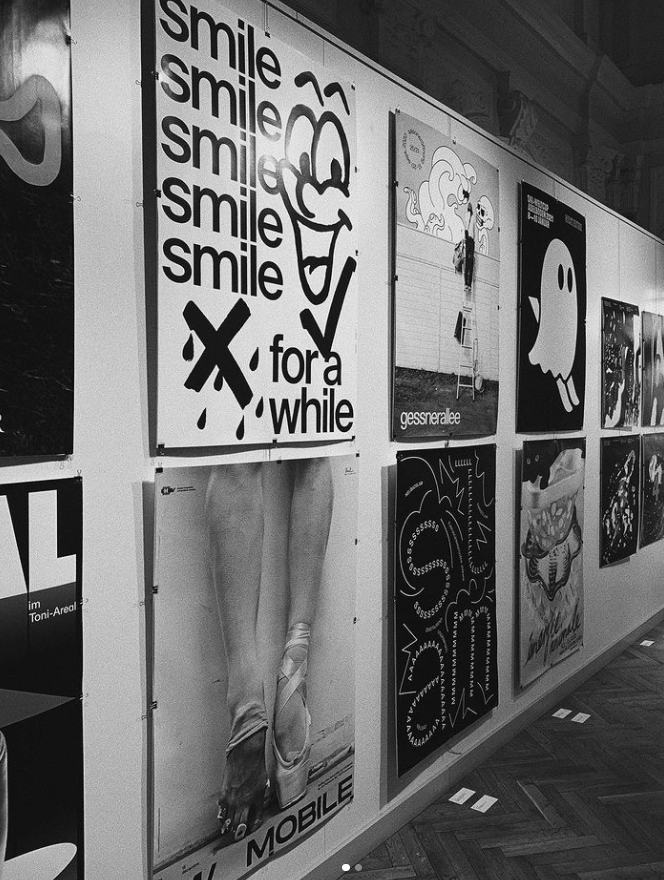
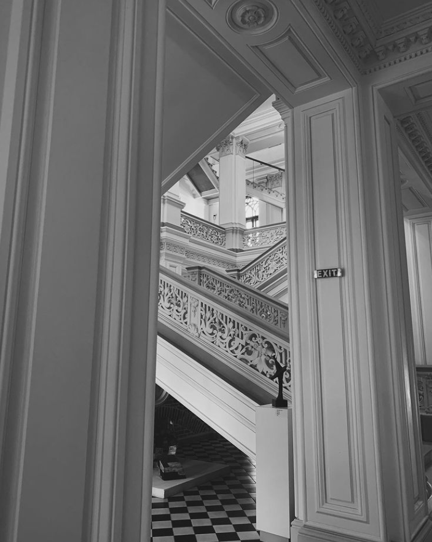

Hobby-uri:
Favorita mea ocupatie este pozatul !
Lumea fotografiei poate fi un lucru minunat atunci cand vrei sa evadezi, sa explorezi, sa vezi in spatele „usilor inchise”, iar sentimentul developarii propriei munci, asteptarea in camera obscura pentru ca fotografiile sa se usuce… nu se poate compara cu nimic
Citeşte întreaga ştire: Hobby-ul meu, fotografia.
Vei avea mereu lucruri noi de învățat despre fotografie, nu este un hobby de care să te plictisești. Va exista întotdeauna ceva nou care să te inspire și să te motiveze.
Există multe idei care te pot inspira în călătoria ta de pasionat de fotografie, mulți fotografi de la care ai ce învăța, atât online cât și offline. Cu cât descoperi mai multe stiluri și artiști, cu atât vei fi mai curios. Iar simțul curiozității este acela care ne menține tineri și ne antrenează mintea. Astfel, fotografia este unul dintre hobby-urile care te scoate cel mai mult din rutină.
Galeria proprie :








